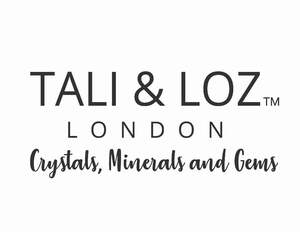

Trade Mark Journal No.2025/034 22 August 2025
UK00004247020 10 August 2025 (14,35)

- Class 14
- Gems; Chalcedony used as gems; Precious and semi-precious gems; Olivine [gems]; Jewels; Natural gem stones; Artificial gem stones; Precious jewels; Gemstones; Precious gemstones; Semi-precious gemstones; Gemstones, pearls and precious metals, and imitations thereof; Cases of precious metals for jewels; Jewellery being articles of precious stones; Articles of jewellery with precious stones; Jewel pendants; Spinel [precious stones]; Precious and semi-precious stones; Pearls [jewelry]; Pearls [jewellery]; Tanzanite being gemstones; Pearls; Key charms of precious metals; Cases for jewels; Emeralds; Precious stones; Diamonds; Trinkets [jewellery]; Jewel cases of precious metal; Tourmaline gemstones; Semi-precious stones; Trinkets [jewelry]; Jewellery boxes of precious metals; Jewel chains; Jewellery fashioned of semi-precious stones; Key rings [trinkets or fobs] of precious metal; Jewelry boxes of precious metals; Jewellery incorporating precious stones; Jewellery stones; Figurines of precious stones; Charms [jewellery] of common metals; Key charms coated with precious metals; Charms [jewellery]; Charms for jewellery; Jewellery charms; Artificial stones [precious or semi-precious]; Charms [jewelry]; Jewelry charms; Charms for jewelry; Jewellery made of precious stones; Key charms [trinkets or fobs]; Semi-precious articles of bijouterie; Articles of jewellery with ornamental stones; Jewellery containing gold; Jewellery boxes of precious metal; Jewellery being articles of precious metals; Presentation boxes for gemstones; Ornaments, made of or coated with precious or semi-precious metals or stones, or imitations thereof; Unwrought precious stones; Jewelry boxes of precious metal; Small jewellery boxes of precious metals; Statues and figurines, made of or coated with precious or semi-precious metals or stones, or imitations thereof; Gold jewellery; Synthetic precious stones; Jewellery in semi-precious metals; Sapphires; Gold necklaces; Imitation precious stones; Jewellery in precious metals; Jewellery of precious metals; Figurines of precious or semi precious stones; Key chains as jewellery [trinkets or fobs]; Jewellery incorporating pearls; Jewelry charms in precious metals or coated therewith; Precious jewellery; Cabochons; Diamond jewelry; Fancy keyrings of precious metals; Gold earrings; Statuettes made of semi-precious stones; Chains made of precious metals [jewellery]; Synthetic stones [jewellery]; Jewellery chain of precious metal for necklaces; Earrings of precious metal; Articles of jewellery made of precious metals; Jade [jewellery]; Artificial gemstones; Semi-finished articles of precious stones for use in the manufacture of jewellery; Items of jewellery; Jewellery items; Necklaces of precious metal; Jewelry boxes, not of precious metal; Jewelry cases of precious metal; Charms; Gold bracelets; Agate as jewellery; Figurines for ornamental purposes of precious stones; Jewellery plated with precious metals; Watch crystals; Jewellery made of crystal coated with precious metals; Jewellery made of crystal; Jewellery in the form of beads; Olivine [peridot]; Amber pendants being jewellery; Opals; Jewellery; Necklaces [jewellery]; Jewellery, including imitation jewellery and plastic jewellery; Pendants [jewellery]; Bracelets [jewellery]; Ornaments [jewellery]; Necklaces [jewellery, jewelry (Am.)]; Jewelry; Fashion jewellery; Chains [jewellery, jewelry (Am.)]; Jewellery products; Rings [jewellery, jewelry (Am.)]; Jewellery chains; Jewellery boxes; Pendants [jewelry]; Cabochons for making jewellery; Sterling silver jewellery; Jewellery articles; Jewellery made from gold; Jewellery made from silver; Jewellery chain of precious metal for anklets; Jewellery cases; Sapphire.
- Class 35
- Retail services and online retail store services connected with the sale of jewellery, precious stones, semi-precious stones, unwrought precious stones, crystals, minerals, gemstones, crystal ornaments, decorative objects made of stone, crystal or glass; Wholesale services connected with the sale of jewellery, precious stones, semi-precious stones, unwrought precious stones, crystals, minerals, gemstones, crystal ornaments, decorative objects made of stone, crystal or glass; Retail services in relation to jewellery; Retail services relating to jewelry; Online retail services relating to jewelry; Wholesale services relating to jewelry; Wholesale services in relation to jewellery.
Creators and Curious ltd